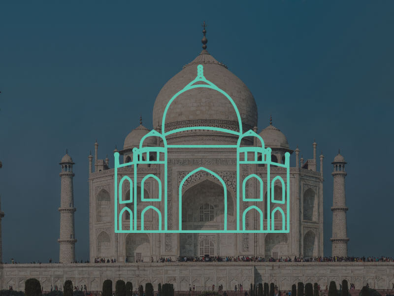

Taj Mahal
The Taj Mahal is an ivory-white marble mausoleum on the south bank of the Yamuna river in the Indian city of Agra. It was commissioned in 1632 by the Mughal emperor, Shah Jahan, to house the tomb of his favourite wife, Mumtaz Mahal. The tomb is the centrepiece of a 42 acre complex, which includes a mosque and a guest house, and is set in formal gardens bounded on three sides by a crenellated wall.
The Taj Mahal was designated as a UNESCO World Heritage Site in 1983 for being “the jewel of Muslim art in India and one of the universally admired masterpieces of the world’s heritage”. Described by Nobel laureate Rabindranath Tagore as “the tear-drop on the cheek of time”, it is regarded by many as the best example of Mughal architecture and a symbol of India's rich history. The Taj Mahal attracts 7–8 million visitors a year. In 2007, it was declared a winner of the New7Wonders of the World (2000–2007) initiative.